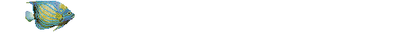
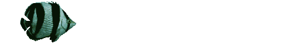

_
|E]
.--|=====-.
| | MAIL | <---- Send email
|__|______|___
||
||
|| www %%%
vwv || )_(,;;;, ,;,\_/ www
)_( || \|/ \_/ )_(\| (_)
\| \ || /\\|/ |/ \| \|// |
___ \|//jgs| |//_\V/_\|//_______\\|//V/\\|/__
wWWWw wWWWw
vVVVv (___) wWWWw (___) vVVVv
(___) ~Y~ (___) vVVVv ~Y~ (___)
~Y~ \| ~Y~ (___) |/ ~Y~
\| \ |/ \| / \~Y~/ \| \ |/
\\|// \\|// \\|/// \\|// \\|// \\\|///
jgs^^^^
. ,
.:/
,,///;, ,;/
. o:::::::;;///
. >::::::::;;\\\
''\\\\\'" ';\
';
. ,
.:/
. ,,///;, ,;/
. o:::::::;;///
>::::::::;;\\\
''\\\\\'" ';\
';
\
\
. \ (\ . (_) o
(\ \ )) . \. | o .
((. \((. (\. )) (\ . _ o
\\/ \)) )) (( ((. . (_)
| || ./\ (( \\ / \\/ o
\\// (( \ \\/ . .|| | || .
.// \\(\ .--.____) .-. \\//
|| | || "(o>_/___ \_//\) .//
.|| \\|| .~|| \__/ \\. ||
\|| \|| \|| || ||

,-,
('_)<
`-`
Did you know that dolphins are also called "Angels of the sea"??
